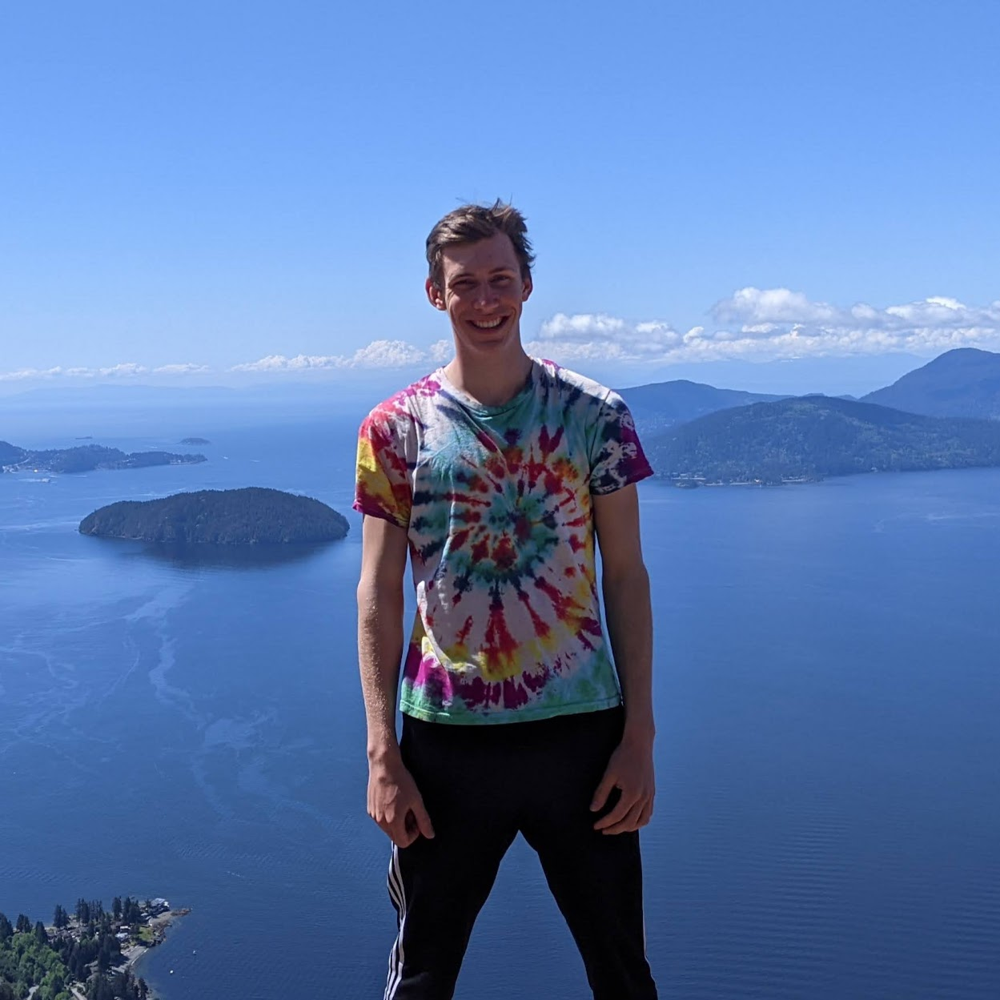
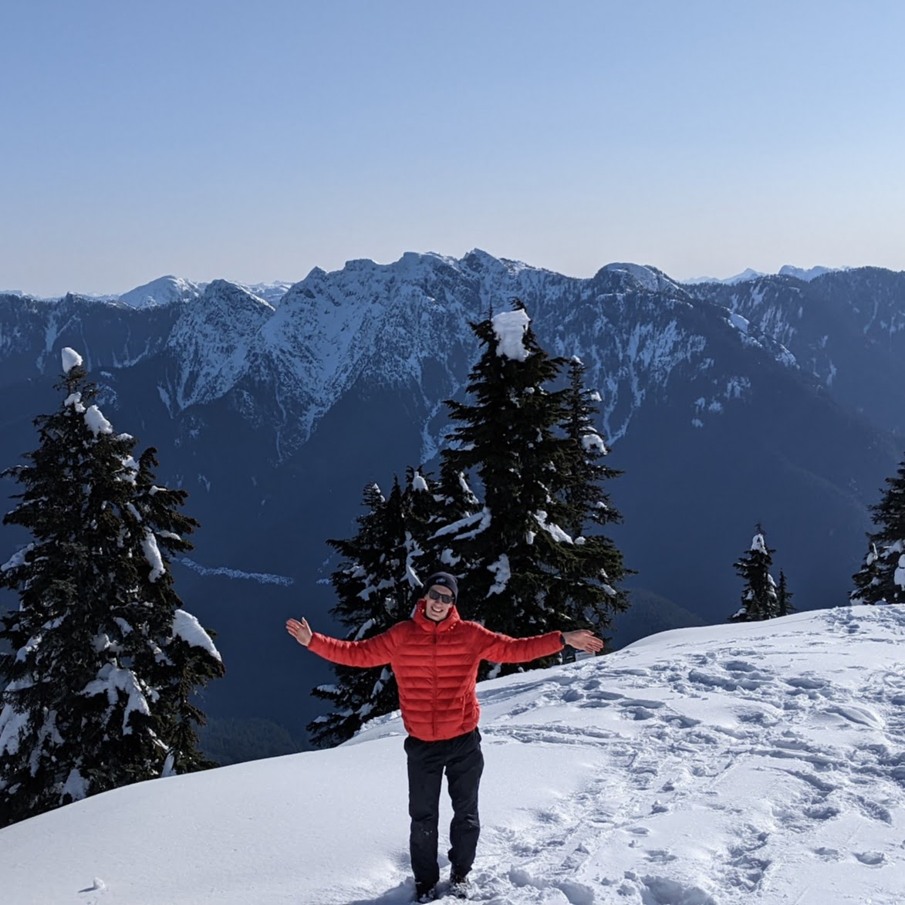
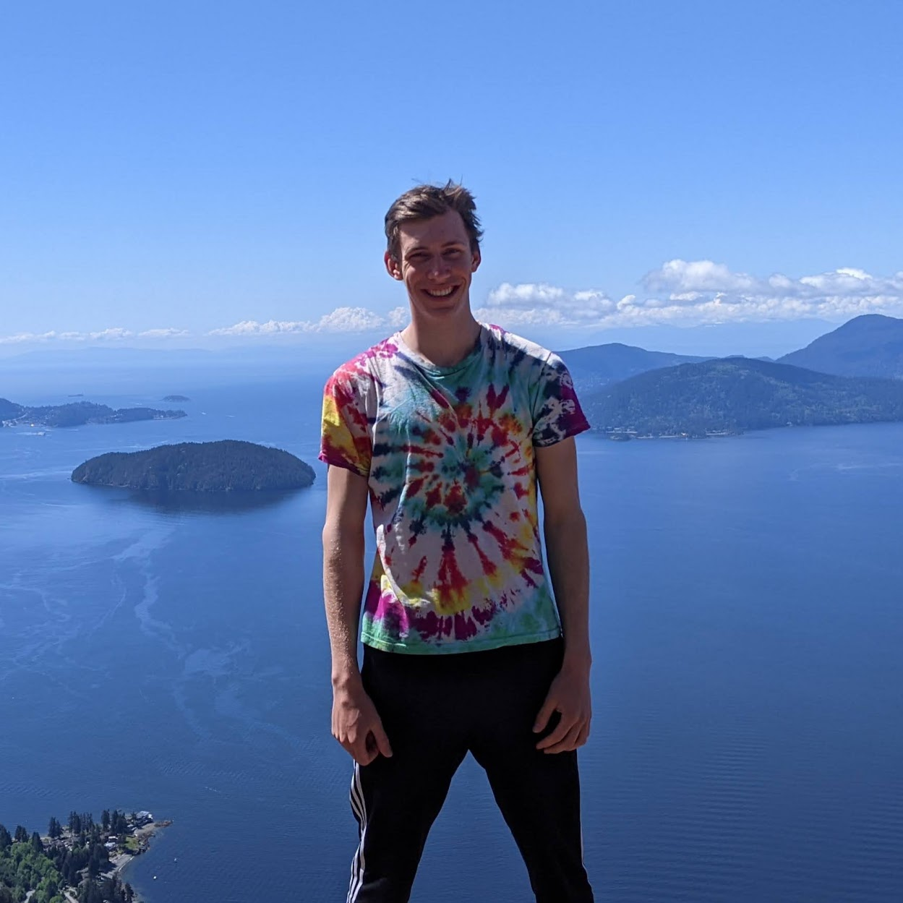
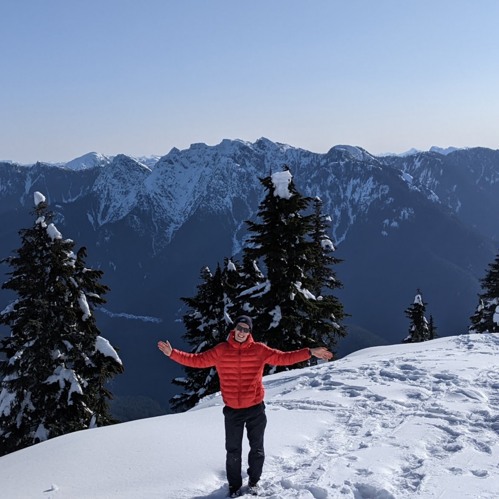

Hi, my name is Kris and I am an eager learner who enjoys finding creative solutions to challenging problems. As a creative thinker who can learn and apply knowledge quickly, I have chosen to pursue Engineering Physics at UBC. Within the Engineering Physics program, I focus on developing a strong foundation of advanced math and physics, while taking courses on Mechanical, Electrical, and Software Engineering, in order to become a well-rounded individual with a background in a variety of disciplines. When I am not at pursuing Engineering, I enjoy coaching swimming and diving. I am the Head Coach and the Assistant Head Coach of the Diving and Swimming programs for the North Vancouver Cruisers Aquatics Club.
Featured Articles
Click on the article image to read more!